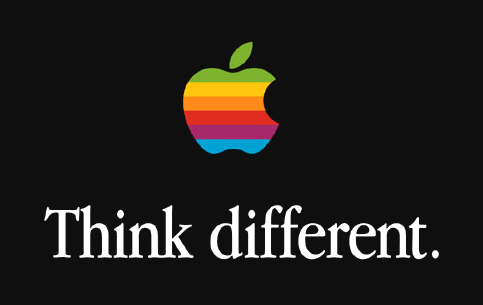

Hey there and welcome to my CS1010 project, a website showing the history and the rise of Apple.
Check out "The Early Years" to see how Apple got started out in the computing business.
Head over to "The NeXTstep" to hear about how Steve Jobs returned to Apple and took the company further than ever.
"The iGeneration" focuses on more recent Apple happenings, detailing the start of the iGeneration and how far Apple has come in such a short period of time.
Click on "The Products" to see the progression of Apple's fantastically designed devices and machines.
Finally, if you want to go straight to Apple's homepage, click on the apple icon on the menubar.
Thanks for visiting! -Jake
